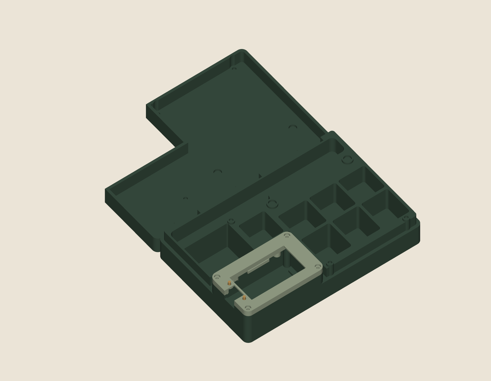

Build a new case
The body, lid, current screen module, patterns, firmware and complete build guide in one matched set.
Download the complete projectA printable case for dice, a miniature and a pen, with an offline character sheet in the corner.
Your character, compiled from JSON. No account required.

Every pocket has a purpose. Every part has a source file. The build guide shows how the pieces go together.

The removable lid flips into a magnetically docked rolling tray. Both pieces rest on the table.
Seven dice pockets and dedicated storage. Check the pocket dimensions against your own pieces.
A removable faceplate and four adjustable insulating supports keep the electronics serviceable.
Connected wrap patterns cover the lid and base. The screen surround stays painted.

Check stats, edit health, browse actions and spells, and track resources. Character packs work offline and retain state through sleep. Start with the included synthetic character, then validate and compile your own JSON pack.
Actual simulator capture using a synthetic character. Phone setup is planned; battery runtime has not been measured.
Start with the fit checks. Then print, assemble and finish the case. This is an experimental maker build. Read the known limits before ordering parts.
Check the exact board, battery connector and polarity. Use the hardware bill of materials. Battery model, capacity, polarity and supplier pricing still require your own verification.
Building from scratch and repairing an existing case use different packages. Keep each set together.
Test your inserts, magnets and moving parts before committing to a full print.
Confirm seating and independent button movement. Never use the screws to bend the board into place.
Trial-fit the two exterior paper nets at 100% scale, then test a scrap of the actual covering material.
Install heat-set inserts with electronics and battery removed. Support-adjustment screws push insulating tips; metal must not touch the PCB. Stop at first light contact. Preserve USB and removable-deck service access. Sleep is software sleep, not battery disconnection.
Read the hardware assembly guide and bill of materials before printing or powering the case.
Initial assembled orientation, navigation, sleep and wake on both buttons have passed with HP retained. Repeated cycles, inaccessible-reset recovery, battery endurance, standby current and thermal tests remain open. Published recovery instructions must be verified on the named board before a ready-to-flash package ships.
Print it, inspect it, change it. Editable sources belong beside the finished exports.
Experimental release · Body/lid v0.2 + screen module v0.3 · Source and exports included
The body, lid, current screen module, patterns, firmware and complete build guide in one matched set.
Download the complete projectKeep the body and lid. Replace the faceplate, carrier, two buttons and four insulating supports together.
Open the matched hardware files →| What you need | Formats | What it includes | Status |
|---|---|---|---|
| Print the case | STL | Matched body, lid and v0.3 module | Open source ↗ |
| Edit the design | STEP / Python | Original parts and parameter sources | Open source ↗ |
| Build the firmware | C / JSON / Python | Board project, simulator and pack tools | Open source ↗ |
| Cut the covering | PDF / Python | Two connected exterior wrap nets | Open source ↗ |
| Explore the details | Images / documentation | Actual geometry, assembly and known limits | Open source ↗ |
Every release: version, compatibility, file sizes and checksums.
The revisions matter. So do the things that did not fit the first time.
The case, firmware, build guide and website live together. Fork the project, inspect the geometry or improve a build step.
The character interface runs on the assembled display. Navigation, sleep and both wake buttons passed initial checks. The public pack tool validates JSON and generates the compiled character data; the included example is synthetic.
The matched v0.3 repair replaces a screen assembly that did not seat reliably. Geometry checks pass; physical fit acceptance remains open.
One for the lid, one for the base. The PDF is generated and checked; paper and material trials come next.
Measure the finished case and power behavior, validate recovery and record a complete tabletop session before making stronger claims.